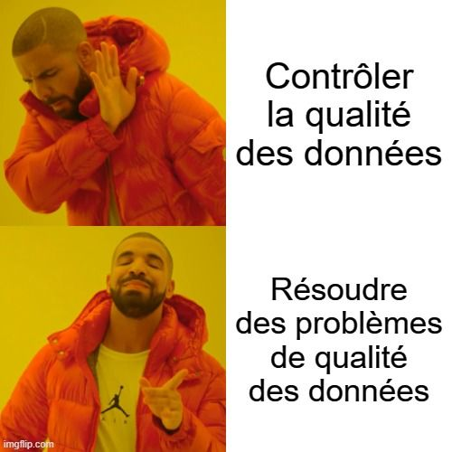

Repost Linkedin : https://www.linkedin.com/posts/yacine-bekka_data-dataquality-qualitaezdedonnaezes-activity-7051803633595609088-qrnR?utm_source=share&utm_medium=member_desktop
Si ton process de DATA QUALITY est centré principalement sur les CONTRÔLES DE QUALITE, tu as TOUT FAUX !
Ce qui importe VRAIMENT, ce sont les PROBLEME DE QUALITE des données
Le nombre et la criticité des contrôles ne devraient pas être la chose sur laquelle tu te concentre le plus….
Evidemment, tu devrais effectuer autant de contrôles que nécessaire, sinon autant que possible.
Dans la plupart des cas, les contrôles de data quality ne coûte pas grand-chose (ni en temps ni en euros)
A moins que tes contrôle de qualité soient très sophistiqué
Ou que qu’ils soient complètement fait à la main dans un obscur fichier Excel….
Ce qui devrait être l’obsession de chaque data quality manager c’est les problèmes de qualité des données.
Le nombre de problèmes et leur criticité sont beaucoup plus importants !
Car c’est la résolution de ses problèmes qui va permettre une améliorations de la qualité, et non les contrôles eux-mêmes.
En fin de compte, les 2 métriques qui compte vraiment pour ton processus de gestion de la qualité des données (surtout au début) sont :
- Les problèmes de qualité identifiés
- Les problèmes de qualité résolus
